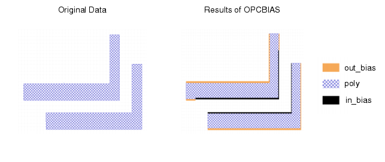

OPCBIAS applies
bias based on space and widths. Biasing can be positive or negative,
adding to or reducing the width of a target shape, respectively.
Procedure
- Write a rule file defining
the biasing required. The rule file must:
- Read in the target layer to
receive biasing.
- Write a rule for each width
and height combination defining how edges meeting the criteria should
be treated.
- Run calibre using this rule
file:
calibre -drc -hier bias.svrf
- To view results, open bias_out.gds in
Calibre WORKbench. Figure 1 shows typical results:
Figure 1. OPCBIAS Results
Examples
This SVRF file is a starting point
for the development of OPCBIAS rules: